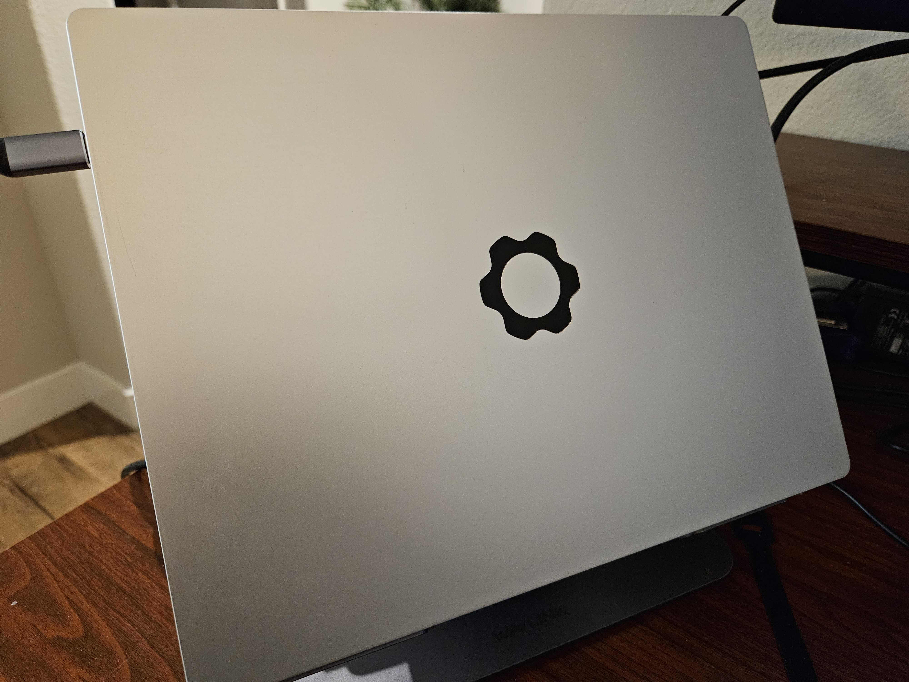
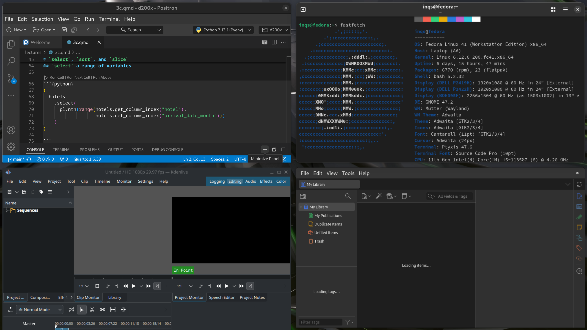
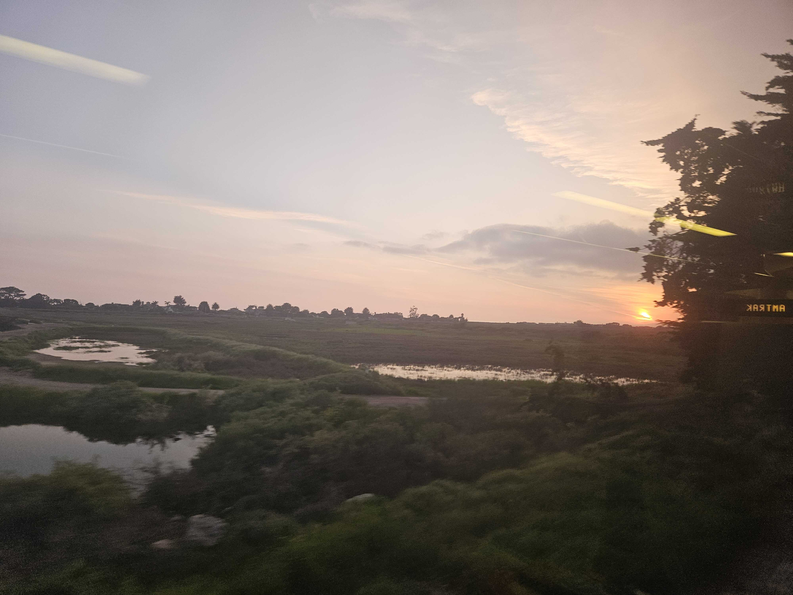

Wellness Plan Spring 2025
Isaac Quintanilla Salinas
January 8, 2025
Reuse, Reduce, and Repair
During my dissertation phase, my laptop stopped working because it could not connect to my charger. The worst part was that I could not fix it like I have done in the past, which infuriated me. Fortunately at that time, Framework laptops came out with the promise that all the parts to fix the laptop to would be made available for users to repair. Knowing this, I quickly pulled the trigger and bought the laptop almost immediately, and has served me to this day.
Once, I passed my dissertation, I slowly realized the importance of right to repair to continue use perfectly good products that can be repaired with a simple part change. Which ultimately reduces the waste I produce. Now I try to purchase things with a right to repair mentality. Which ultimately means to purchase things that are meant to last, and asking serious questions if I truly need this product and what I would do if it no longer works. A goal I strive to achieve every day.
Over the past year, I began reducing my plastic use by investing in products that come with minimal packaging or minimal plastic. We all know that plastics have polluted the environment and been found in our human bodies. Therefore, I am committed to take small steps to reduce my impact to plastic waste. Last year, I began purchasing plastic-free cleaning products, especially the for plastic-wrapped cleaning pods, to reduce my own plastic waste. It has been a success, and I hope to continue working on this.
Goal: Identify one more product that reduces my environmental impact and encourages right to repair, and ultimately implement it.

Routines
Procrastination has always been a problem for me, and still is. I have tried many things to motivate me to complete a task, with only partial success. Therefore, I want to attempt new things that will reduce my procrastination.
Lately, I noticed that I have been building better habits that I perceive will benefit me. Whether it being walking more, eating healthier, or be concious about my purchases. I am not sure how much is it due to me maturing, or focusing on completing small steps. But there have been positive results. Therefore, I want to continue with the progress that I have achieved thus far and experiment with other techniques and assess their efficacy.
Goal: Every week, I will right down all the tasks that I have not completed for the week, and I will spend a few hours to complete a task.
Disconnect from Online Platforms
Last year, I listened to a podcast on Indigenous AI and how AI can help indigenous communities as well as harm them and the planet. A couple of highlights that the main speaker talks about is the amount energy used to run these algorithms and data centers, and how we use it to “help” our lives. While there are many messages from the podcast episode, one thing idea I gain is “Do not let perfect be the enemy of good”.
After listening to the podcast, I began to think how my use of online platforms impact the environment. While, I have not found a definitive answer to this questions. Once thing I can do is to not use cloud-based applications and run them locally. I am still using energy to produce the product, by I am not using the internet to communicate, which overall reduces the amount of energy needed.
In the past, I always adopted free and open source software (foss), for 2 reasons. First, I did not have any money to buy the best software. Second, whatever I create will not matter if no one from El Salvador can use it. Therefore, I committed to prioritize the use foss because it would ensure that any Salvadoreñ@ can use it, with only the limitation of needing a computer and internet to download the stuff. Now I have environmental reasons to continue using offline free and open source software.
My goal for this semester is find an offline application for a technology tool I personally use. I am not sure which tool it may be, but I am eyeing Canva to be replaced.

Walking
Over the past year, I have managed to have a daily average of 10,000 steps a day.
Goal: Increase my daily average steps to 12,500.
Travel
Goal: Take the train to either San Luis Obispo or San Diego in the semester.

2025 Goals
I have several other goals I have for the year, and I plan to continue work on them this year:
Work on being grateful and appreciative of the smaller things.
Learn Causal Inference.
Learn to cook new dishes from scratch.
Learn a new hobby.